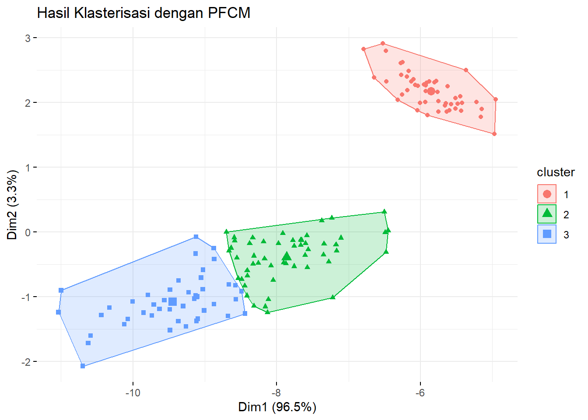

Buku ini sedang dalam tahap tinjauan terbuka. Kami ingin umpan balik Anda untuk membuat buku ini lebih baik bagi. Anda dapat memberikan anotasi pada beberapa teks dengan memilihnya menggunakan kursor dan kemudian klik “Beri Anotasi” pada menu pop-up. Anda juga dapat melihat anotasi orang lain: klik tanda panah di sudut kanan atas halaman
10.2 Eksperimen Possibilistic Fuzzy C-Means
Pada eksperimen ini, kita akan menerapkan algoritma Possibilistic Fuzzy C-Means (PFCM) untuk klasterisasi data menggunakan dataset iris. Hasil klasterisasi akan divisualisasikan menggunakan fungsi fviz_cluster dari library factoextra.
Dataset
Dataset yang digunakan adalah iris, terdiri dari 150 data bunga dengan empat fitur: panjang dan lebar kelopak serta sepal.
Klasterisasi Menggunakan PFCM
# Jalankan algoritma PFCM
set.seed(123) # Untuk hasil yang dapat direproduksi
pfcm_result <- ppclust::pfcm(iris_data, centers = 3, m = 2, eta = 2, a = 1, b = 1)
# Tampilkan ringkasan hasil
print(pfcm_result$u)
#> Cluster 1 Cluster 2 Cluster 3
#> 1 0.996480150 0.0023130348 0.0012068151
#> 2 0.975868496 0.0160007819 0.0081307217
#> 3 0.979608803 0.0133830057 0.0070081915
#> 4 0.967206097 0.0217452013 0.0110487017
#> 5 0.994174397 0.0038164629 0.0020091402
#> 6 0.932895598 0.0442554140 0.0228489876
#> 7 0.979059696 0.0137568880 0.0071834163
#> 8 0.999579369 0.0002784997 0.0001421311
#> 9 0.929753079 0.0462920139 0.0239549070
#> 10 0.982823744 0.0114123509 0.0057639053
#> 11 0.967246018 0.0214843801 0.0112696022
#> 12 0.992051954 0.0052807153 0.0026673302
#> 13 0.970583482 0.0194509013 0.0099656169
#> 14 0.921993181 0.0505037986 0.0275030209
#> 15 0.887265437 0.0717398774 0.0409946858
#> 16 0.837548518 0.1032297823 0.0592216996
#> 17 0.945412339 0.0352849929 0.0193026676
#> 18 0.996469242 0.0023236626 0.0012070956
#> 19 0.902108018 0.0645014633 0.0333905185
#> 20 0.978411327 0.0141446456 0.0074440275
#> 21 0.968286043 0.0212393436 0.0104746130
#> 22 0.984215431 0.0103915557 0.0053930136
#> 23 0.957647380 0.0271700432 0.0151825772
#> 24 0.979251367 0.0140110664 0.0067375670
#> 25 0.966597699 0.0225506778 0.0108516229
#> 26 0.973708827 0.0176455638 0.0086456089
#> 27 0.994759365 0.0035004641 0.0017401714
#> 28 0.993200193 0.0044923074 0.0023075000
#> 29 0.993601936 0.0042154877 0.0021825766
#> 30 0.979439308 0.0137029745 0.0068577172
#> 31 0.978777208 0.0141907456 0.0070320463
#> 32 0.973954147 0.0172989708 0.0087468824
#> 33 0.936817622 0.0407927897 0.0223895886
#> 34 0.901721726 0.0628651092 0.0354131646
#> 35 0.985172541 0.0098713385 0.0049561203
#> 36 0.984863209 0.0099067996 0.0052299919
#> 37 0.963488611 0.0238259508 0.0126854378
#> 38 0.990560361 0.0061710121 0.0032686272
#> 39 0.939025312 0.0399516132 0.0210230748
#> 40 0.998318572 0.0011137482 0.0005676800
#> 41 0.994465946 0.0036221215 0.0019119328
#> 42 0.849675062 0.0989791841 0.0513457537
#> 43 0.951943768 0.0314013357 0.0166548964
#> 44 0.978737029 0.0141915941 0.0070713764
#> 45 0.943974020 0.0375363150 0.0184896651
#> 46 0.972057789 0.0185385225 0.0094036888
#> 47 0.976041903 0.0157506943 0.0082074028
#> 48 0.973944799 0.0171622513 0.0088929497
#> 49 0.976578705 0.0153719541 0.0080493406
#> 50 0.997126135 0.0018970852 0.0009767801
#> 51 0.038196640 0.4209313911 0.5408719687
#> 52 0.024141099 0.7322001491 0.2436587524
#> 53 0.024872002 0.3198514956 0.6552765020
#> 54 0.054874214 0.8338450273 0.1112807588
#> 55 0.019857320 0.7170874722 0.2630552078
#> 56 0.006235251 0.9638696648 0.0298950847
#> 57 0.023807331 0.6182539933 0.3579386758
#> 58 0.289988512 0.5526859141 0.1573255738
#> 59 0.026357045 0.6834683274 0.2901746278
#> 60 0.080112932 0.7945114186 0.1253756497
#> 61 0.222993133 0.6035922595 0.1734146070
#> 62 0.008904250 0.9537297566 0.0373659930
#> 63 0.058633507 0.8101643228 0.1312021700
#> 64 0.009238768 0.8913468315 0.0994144004
#> 65 0.096597861 0.7840348280 0.1193673110
#> 66 0.035995371 0.6555042932 0.3085003361
#> 67 0.013739168 0.9169927204 0.0692681118
#> 68 0.029226787 0.9017941773 0.0689790359
#> 69 0.026119067 0.7980175296 0.1758634035
#> 70 0.057652670 0.8442993260 0.0980480042
#> 71 0.022702684 0.6646396319 0.3126576836
#> 72 0.020466662 0.9168419002 0.0626914374
#> 73 0.019929212 0.6422998131 0.3377709745
#> 74 0.011591697 0.8912730125 0.0971352906
#> 75 0.020064297 0.8608846498 0.1190510535
#> 76 0.029144738 0.7240543029 0.2468009589
#> 77 0.027475650 0.4680985588 0.5044257909
#> 78 0.013465205 0.2143178575 0.7722169379
#> 79 0.003082539 0.9735543677 0.0233630935
#> 80 0.134329116 0.7335859536 0.1320849302
#> 81 0.084502036 0.7960978774 0.1194000861
#> 82 0.110591439 0.7594442852 0.1299642759
#> 83 0.035429624 0.8920591941 0.0725111821
#> 84 0.019144544 0.5750814012 0.4057740547
#> 85 0.026477719 0.8645051311 0.1090171500
#> 86 0.027617469 0.7691325072 0.2032500241
#> 87 0.026809970 0.4966008585 0.4765891720
#> 88 0.026026355 0.8275287779 0.1464448672
#> 89 0.026562649 0.9069922307 0.0664451206
#> 90 0.043862918 0.8661849450 0.0899521365
#> 91 0.022534607 0.9047077033 0.0727576893
#> 92 0.008661536 0.9129071331 0.0784313306
#> 93 0.026821223 0.9100168750 0.0631619020
#> 94 0.274110878 0.5675115573 0.1583775652
#> 95 0.016238532 0.9366932784 0.0470681898
#> 96 0.018263443 0.9287137665 0.0530227901
#> 97 0.011555819 0.9522025566 0.0362416240
#> 98 0.009689752 0.9389784760 0.0513317725
#> 99 0.359440036 0.4939065307 0.1466534332
#> 100 0.015937113 0.9407212756 0.0433416113
#> 101 0.022461822 0.1462246529 0.8313135248
#> 102 0.023967037 0.5338335999 0.4421993634
#> 103 0.013997158 0.0921768627 0.8938259794
#> 104 0.007375877 0.0893072128 0.9033169103
#> 105 0.006533799 0.0545031134 0.9389630877
#> 106 0.046284108 0.2061110200 0.7476048717
#> 107 0.073203079 0.7194661995 0.2073307214
#> 108 0.031045553 0.1698507960 0.7991036513
#> 109 0.014612616 0.1284901787 0.8568972056
#> 110 0.034251169 0.1674104794 0.7983383518
#> 111 0.008595964 0.1173075912 0.8740964445
#> 112 0.008100208 0.1234034760 0.8684963164
#> 113 0.001898663 0.0173305839 0.9807707527
#> 114 0.030041231 0.5927383544 0.3772204141
#> 115 0.031462190 0.3933859632 0.5751518464
#> 116 0.008912293 0.0919714575 0.8991162494
#> 117 0.002486336 0.0297343839 0.9677792805
#> 118 0.061480661 0.2334547253 0.7050646133
#> 119 0.059141658 0.2389096239 0.7019487179
#> 120 0.029044265 0.6557694133 0.3151863221
#> 121 0.009451641 0.0668331516 0.9237152075
#> 122 0.029614920 0.6460117789 0.3243733008
#> 123 0.052224196 0.2244572156 0.7233185881
#> 124 0.016873690 0.4910529845 0.4920733253
#> 125 0.006098953 0.0482232162 0.9456778311
#> 126 0.021251556 0.1298166738 0.8489317705
#> 127 0.016341274 0.6297013389 0.3539573871
#> 128 0.017394385 0.5549580515 0.4276475632
#> 129 0.005253065 0.0552419708 0.9395049638
#> 130 0.019882962 0.1372539268 0.8428631113
#> 131 0.028586935 0.1616574340 0.8097556314
#> 132 0.061393925 0.2360606432 0.7025454323
#> 133 0.006387719 0.0638960493 0.9297162314
#> 134 0.017053600 0.4403567770 0.5425896230
#> 135 0.025681810 0.3409946787 0.6333235111
#> 136 0.039049527 0.1862731001 0.7746773725
#> 137 0.016169444 0.1273547237 0.8564758325
#> 138 0.004378579 0.0530800239 0.9425413973
#> 139 0.017416166 0.6896107108 0.2929731233
#> 140 0.004236653 0.0374289144 0.9583344326
#> 141 0.007555531 0.0590971371 0.9333473319
#> 142 0.012893176 0.1152248592 0.8718819650
#> 143 0.023967037 0.5338335999 0.4421993634
#> 144 0.011848723 0.0799326121 0.9082186646
#> 145 0.013918677 0.0952073507 0.8908739723
#> 146 0.007409603 0.0745305899 0.9180598072
#> 147 0.019304192 0.4074817220 0.5732140858
#> 148 0.004113597 0.0576339129 0.9382524899
#> 149 0.016832108 0.1564867015 0.8266811906
#> 150 0.020639401 0.4891480422 0.4902125570Visualisasi Hasil Klasterisasi
Hasil klasterisasi divisualisasikan menggunakan dua fitur pertama (Panjang dan Lebar Sepal).
# Visualisasi klaster
fviz_cluster(list(data = iris_data, cluster = pfcm_result$cluster),
ellipse.type = "convex",
geom = "point",
stand = FALSE,
ggtheme = theme_minimal(),
main = "Hasil Klasterisasi dengan PFCM")